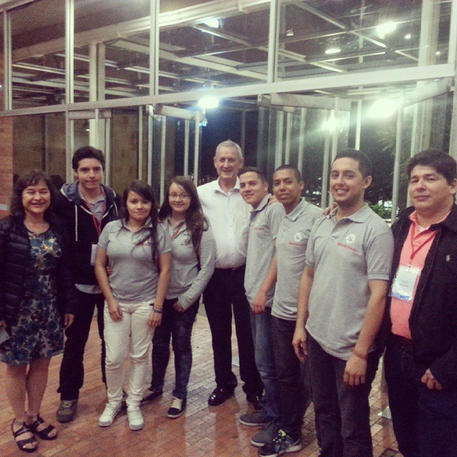
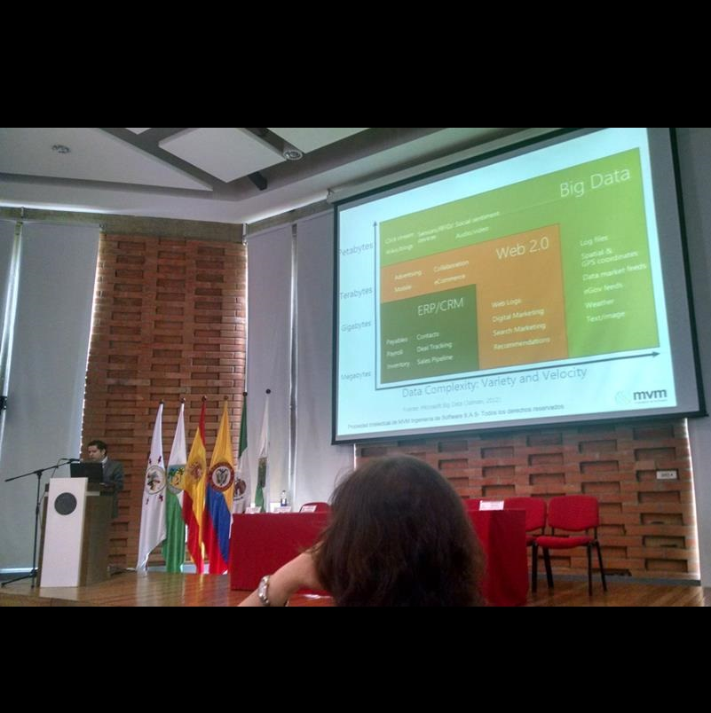
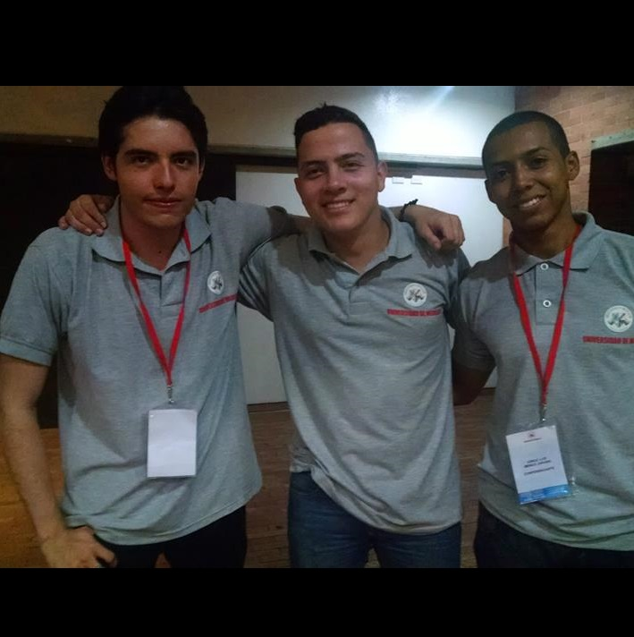
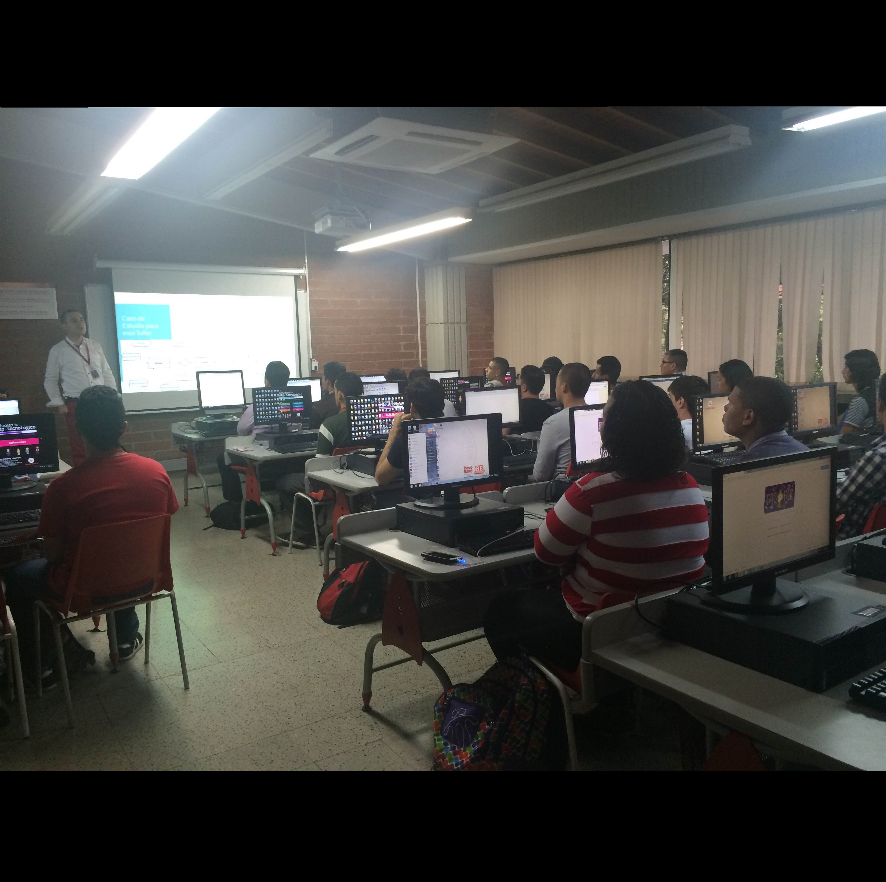
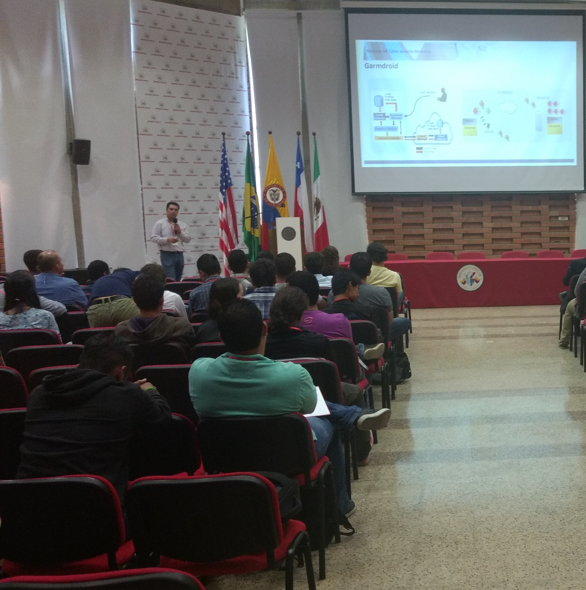

Antecedentes del Seminario Internacional en Ciencias de la Computación
-

2013
Esta versión se realizó los días 7 y 8 de noviembre, junto con las Jornadas Iberoamericanas de Ingeniería de Software e Ingeniería de Conocimiento - JIISIC 2013. El tema central fue arquitecturas empresariales. Como invitados internacionales estuvieron PhD Paul McMahon, PhD Rodrigo Carvajal, PhD Stuart Faulk, PhD Judith Barrios, PhD Juan Pablo Ucán Pech, PhD Raúl Aguilar, PhD Ramón García. Además hubo ponencias de reconocidas empresas y universidades colombianas como: Global AEA Colombia, Inteligencia Móvil S.A.S, Bancolombia Universidad del Cauca, Universidad Nacional de Colombia, Universidad del Valle y Universidad de Medellín, además de la multinacional Oracle.
-

2014
En esta versión el SICC se realizó los días 6 y 7 de noviembre. Contó con la presencia de conferencistas locales e internacionales que mostraron avance y aplicación de temas como Big Data, Innovación en Ingeniería de Software, BPM, y Gestión del Conocimiento. En esa ocasión se contó con la presencia del Dr Luis Joyanes, la Dra Mirna Muñoz como ponentes magistrales internacionales. De la región se contó con invitados del sector bancario, industria de Software (MVM, Software Estratégico). También hubo oportunidad para que los profesores del programa mostraran sus investigaciones.
-

2015
Fue realizado los días 29 y 30 de octubre. En esta ocasión se habló de la industria 4.0, desarrollo ágil, modelado de la Interacción y desarrollo dirigido por modelos. Como conferencistas internacionales estuvieron: Ph.D. Jair Montoya Martínez, Ph.D. Juan Gabardini, Ph.D. William Joseph, Ph.D. Oscar Pastor, Ph.D. Luis Joyanes. Además se contó con un conjunto de talleres sobre temas como: Aplicaciones Web, Programación en Python, Interfaces de Usuario de Negocio.
-

2016
En su novena edición, el SICC 2016 se realizó en la ciudad de Medellín, Colombia, los días 27 y 28 de Octubre de 2016. contó con la participación de investigadores y emprendedores a nivel nacional e internacional.
-

2017
En su décima edición, el SICC 2017 se realizó en la ciudad de Medellín, Colombia, los días 18, 19 y 20 de Octubre de 2017. En el marco de las actividades de formación en investigación y socialización de los programas de pregrado y postgrado en Ingeniería de Sistemas e Ingeniería de Telecomunicaciones.